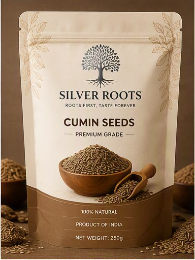
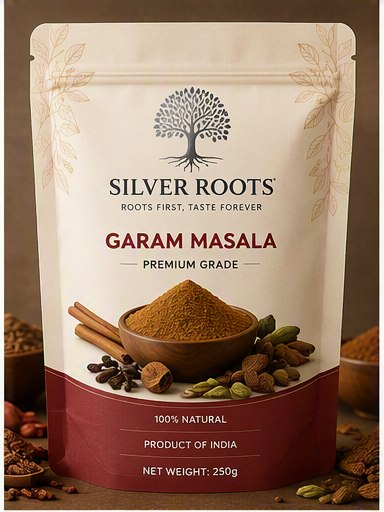
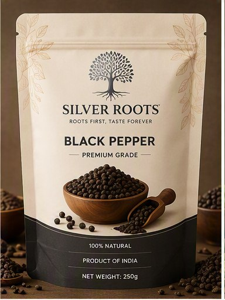
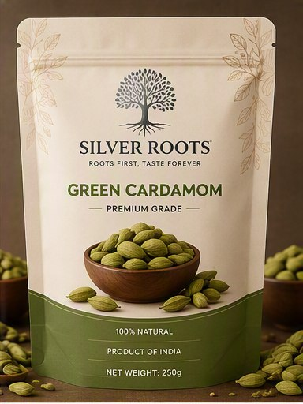
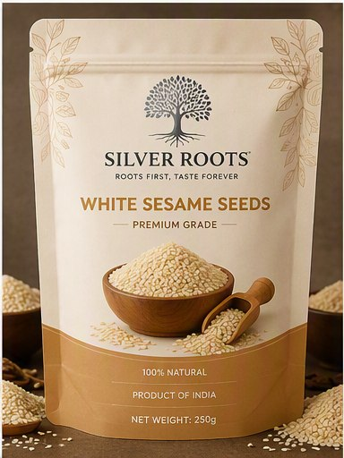
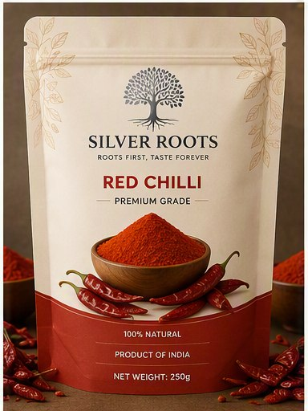
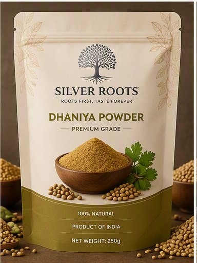
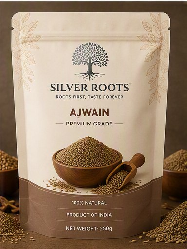
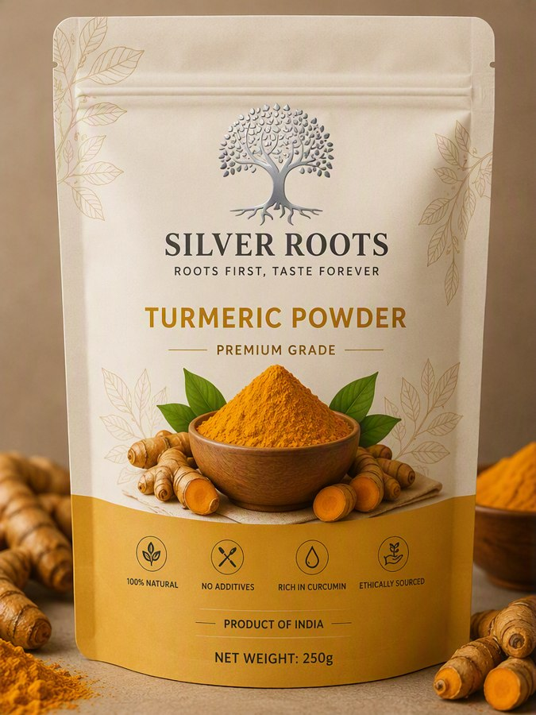

Cumin Seeds
Premium-grade cumin seeds with natural aroma.
Explore the Silver Roots premium spices collection.

Premium-grade cumin seeds with natural aroma.

A balanced blend of premium Indian spices.

Bold flavour and rich aroma.

Fresh, fragrant and carefully selected.

Naturally processed for quality and purity.

Vibrant colour and an authentic taste.

Finely ground coriander with a natural aroma.

Distinctive flavour and purity.

Rich colour, aroma and natural curcumin.
Silver Roots is a premium coffee and spices brand focused on thoughtfully selected products, distinctive packaging and the rich character of Indian origin.
Business ownership: Silver Roots is a brand of Vlaa Import Export, the parent company responsible for business, wholesale and export communication.
Business address: Milkat No. 7026, Shivalik Township, Ahmedabad-Indore Bypass Highway, Kathlal, Kheda, Gujarat 387630
Email: vlaaieco@gmail.com
Phone: +91 89056 72044